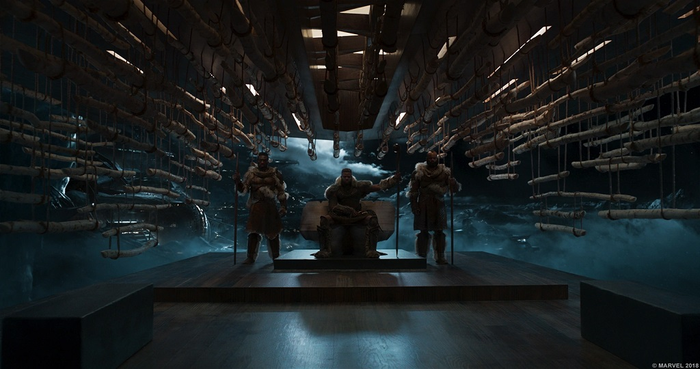
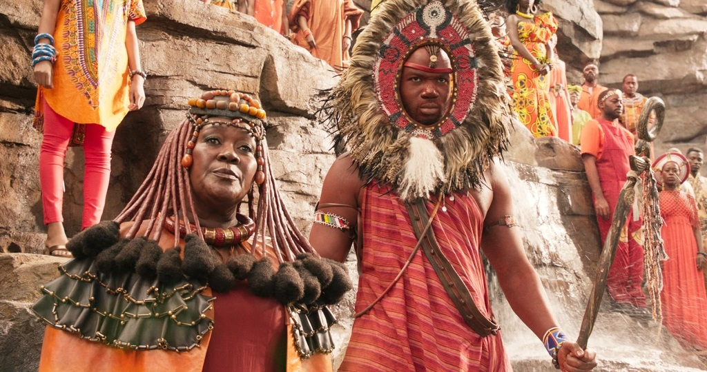

Informacion cultural
La Tribu Jabari
También conocida como la Tribu de la Montaña, los Jabari son los más diversos de todo Wakanda. Para empezar, en lugar de adorar a Bast, como el resto de la gente, son adoradores de Hanuman, el dios gorila. Además, casi siempre están en guerra con la Familia Real. Los Jabari a menudo visten de blanco y marrón, en honor a su dios. El pueblo Jabari sigue una forma de vida más tradicional y sigue firmemente a su líder, M'Baku. El animal que los representa es el gorila de espalda plateada y suelen hablar en dialecto yoruba, a diferencia del resto de la gente de Wakanda, que hablan en xhosa.
la Tribu Minera
Como la mayor riqueza de Wakanda proviene precisamente del vibranium, un grupo de personas encargadas de recolectar y custodiar este material era más que necesario. Entonces tenemos a la Tribu Minera. Trabajadores manuales, suelen vestir trajes rojos, naranjas e incluso amarillos, y el animal que los representa es el león. Llevan tocados muy llamativos y también son adoradores de la diosa Bast. También son bien conocidos por su dominio de la metalurgia.
La Tribu Fronteriza
La Tribu Fronteriza es responsable de proteger a Wakanda de las amenazas externas. Siempre se disfrazan de granjeros o cazadores para deshacerse de posibles amenazas invasoras, pero se sabe que son poderosos guerreros que crían rinocerontes blancos para el combate. Suelen estar asociados con el color azul y, a pesar de estar alejados del corazón de la nación, juegan un papel clave en la política y protección de Wakanda. Suelen adornar sus rostros con marcas y cicatrices, y como la mayoría de la gente de Wakanda, también adoran a la diosa Bast.